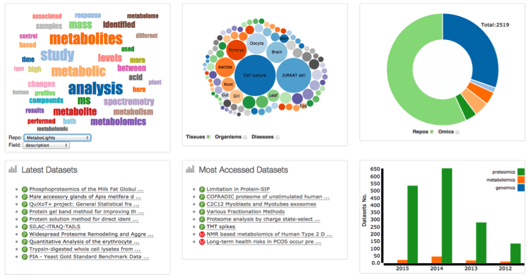
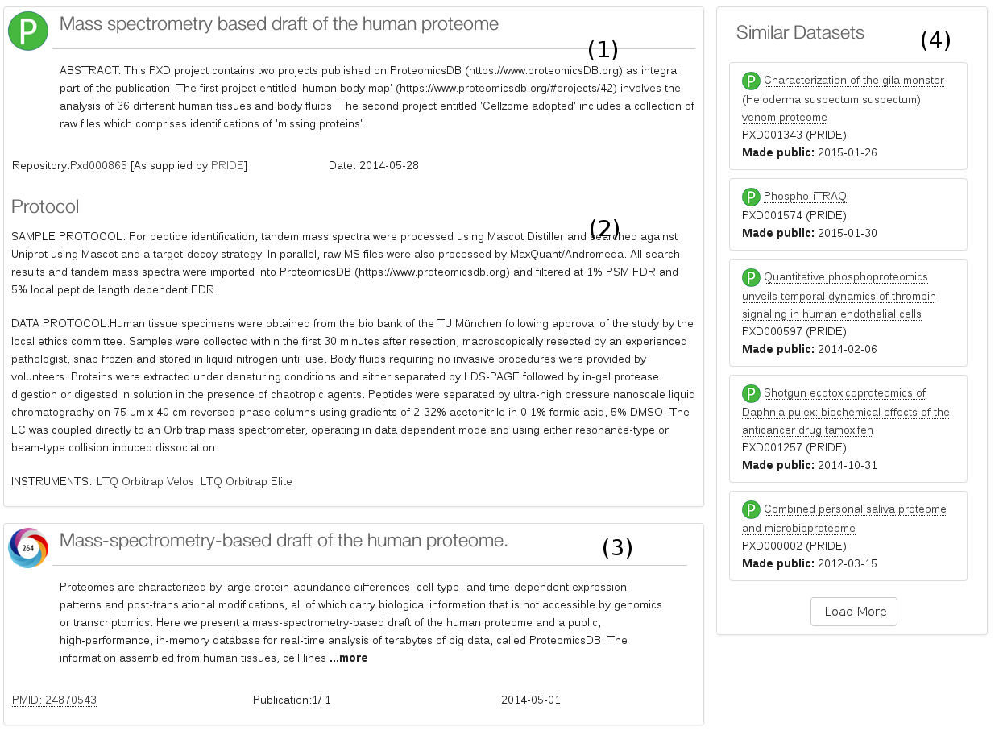

Overview
The Data Discovery Index (OmicsDI) provides dataset discovery across a heterogeneous, distributed group of genomics, proteomics and metabolomics data resources spanning eight repositories in two continents and six organisations, including both open and controlled access data resources. The resource provides a short description of every dataset: accession, description, sample/data protocols biological evidences, publication, etc. The search capabilities offer a unique resource to search for omics datasets. This fact converts the DDI in the first resource worldwide to provide search capabilities through multi-omics experiments.
Major Partners
ProteomeXchange
The ProteomeXchange Consortium is a collaboration of currently three major mass spectrometry proteomics data repositories, PRIDE at EMBL-EBI in Cambridge (UK), PeptideAtlas at ISB in Seattle (US), and MASSive at UCSD (US), offering a unified data deposition and discovery strategy across all three repositories. ProteomeXchange is a distributed database infrastructure; the potentially very large raw data component of the data is only held at the original submission database, while the searchable metadata is centrally collected and indexed. All ProteomeXchange data is fully open after release of the associated publication.
MetabolomeXchange
MetabolomeXchange is a collaboration of 4 major metabolomics repositories, with a total of 10 partners contributing. MetabolomeXchange was inspired by and is implementing similar coordination strategies to ProteomeXchange. The founding partners are MetaboLights at EMBL-EBI(UK),Metabolomics Repository Bordeaux(FR), Golm Metabolome Database and the Metabolomics Workbench (US). The Metabolomics Workbench is a NIH funded collaboration of 6 Regional Comprehensive Metabolomics Resource Cores. MetabolomeXchange started accepting metadata submissions in summer 2014, and reached 200 public datasets in March 2015.
The European Genome-Phenome Archive
The European Genome-Phenome Archive (EGA) provides a service for the permanent archiving and distribution of personally identifiable genetic and phenotypic data resulting from biomedical research projects. Data at EGA was collected from individuals whose consent agreements authorise data release only for specific research use to bona fide researchers. Strict protocols govern how information is managed, stored and distributed by the EGA project. The EGA comprises a public metadata section, allowing searching and identifying relevant studies, and the controlled access data section. Access to the data section for a particular study is only granted after validation of a research proposal through the relevant ethics approval.
Current Databases
The original DDI project provides access to six different databases with proteomics, genomics and metabolomics data from Europe and Unite States (see updated list ). The original list includes: PRIDE (proteomics, UK), PeptideAtlas (proteomics, US), MassIVE (proteomics, US), Metaboligths (metabolomics, UK), MetabolomeWorkbench (metabolomics, US), EGA (genomics, UK).
The project is open for new partners and databases (please contact us: pride-support@ebi.ac.uk). If you are interested in the architecture and the metadata that the resource should provide see section ?.
DDI web application
The main goal of DDI project is to have a way to search interesting datasets across omics repositories. The main web application and web service (see here) allow the user to search and navigate through the DDI datasets. The DDI web application has two main different way of navigate the data: (i) using the home page navigation blocks or (ii) the search box.
Navigate the data from home page
The DDI home page provides different blocks to navigate through the datasets, some of them are: 2D WordCloud; the species/organism/diseases bubble chart, repo/omics pie chart, Latest datasets, Most accessed datasets, Datasets per year. All the charts allow the user to search the data using the specific attribute. These boxes also act as an statistic component of the resource : for example the pie chart shows how many datasets for each repository and omics the resource contains.

A TagCloud or WordCloud is a visual representation for metadata, typically used to depict keyword metadata (tags) on datasets, or to visualize free form text. The WordCloud is build using the more frequently words for every database/repository. The DDI WordCloud can be consider as a two dimensional term representation where the user can select the database and the field they want to look for: description vs database. The user can click the highlight word in the wordcloud to search for this term in the resource.
The bubble chart block allows the users to navigate the data using three main categories: Tissues, Organisms, and Diseases. The user can click in the bubble and it will be redirected to the search using the clicked term.
The Repo/Omics pie chart and the Omics vs Year bar chart allow the users navigate the data using the omics categories (metabolomics, proteomics and genomics). The user can click a bar or the pie and it will be redirected to the search using the clicked term.
The Latest Datasets and Most accessed datasets blocks provide a list of the datasets by the tow categories.
Searching datasets
The main search box in DDI allows the user to search datasets using different keywords. The main search redirects the user to the browser page where the user can see the results of the search (see section 3.3).

The DDI search page is better that most of the partners (proteomeXchange, metabolomeXchange)
searching the data because the data is also indexed using cross-references to other databases.
Searching using publication details
The user can use the PubMed identifier, Title, Authors or even terms from the publication abstract.

Searching using biological Evidences
The search box allows the end-users to search data using biological evidences such as the list of the proteins identified in the proteomics experiment or the metabolite reported in the metabolomics experiment. For example if the user search for 3-methyl-2-oxobutanoic in the resource it will found one dataset in Metaboligths and five in Metabolome workbench that identified the current molecule.

Refining the Search results
The search results can be filter or refine using different categories, filters or terms. The DDI web application supports at the moment nine different refinements: (1) omics type, (2) repository/database, (3) organisms, (4) tissue, diseases, (5) modifications (proteomics), (6) instruments and platforms, (7)publication data, (8) technology type.

The refine filters works in combination, if the user set two filters they will act at the same time.
Dataset View
The dataset View shows the information for every dataset in the resource. It contains four main information components: (1) the dataset description, (2) the sample/data protocol, (3) the publication information, and (4) the similar datasets.

DDI Architecture
The DDI project design is a modular architecture with three main components (Figure 1): (i) Database/Repository Adapters, (ii) EBI Search Indexer, (iii) DDI Application. In summary, the Database/Repository Adapters provides all the libraries and readers to translate the original repository/databases information into a universal and highly customizable XML file for each dataset (see section 5.1). The EBI Search Indexer is a Lucene-based framework that enables to index all the metadata and biological evidences for each dataset (see section 5.2). The DDI application component provides a MongoDB, web-services and web application for search and access the different datasets.

Database/Repository Adapters
The database/repository Adapter components are a set of readers and libraries that translate the data from the original repositories to a common XML-based file. The DDI-XML is a fully customizable XML file used to represent the data from the different datasets, it contains as mandatory for each dataset:
- Dataset ID
- Dataset Title
- Type of experiment
- Publication date
- Submitter details
EBI Search Indexer
In summary, the indexing pipeline:
- Based on Apache Lucene
- An automatized indexing cycle takes place on daily basis.
- Check every night, for every domain if new data is available.
- The process benefits from the indexing parallelization.
- All domains together: ~750GB, more than 300GB indexes
- While the software releases are less frequent, the data to index is checked dail